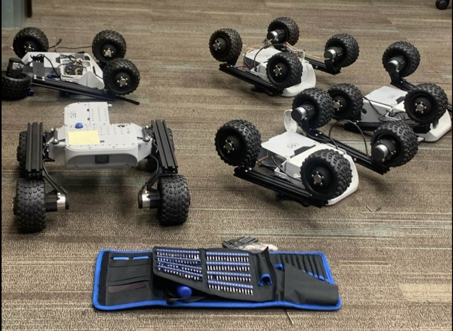

Professional Projects
This paper presents Adaptive Differentiable Model Predictive Contouring Control (AD-MPCC), a framework for autonomous racing that integrates differentiable MPCC with online parameter estimation to handle varying road-surface conditions. For online parameter estimation, we leverage a parameterized Pacejka Magic Formula together with a regularized moving-horizon estimation scheme with exponentially decaying weights to capture road interactions and update parameters in real time. Furthermore, we propose a differentiable MPCC (Diff-MPCC) framework that enables optimal adjustment of objective weights based on predefined long-horizon performance costs. Simulation results demonstrate that AD-MPCC reliably ensures safety and achieves faster lap times compared to baseline controllers in both single-surface and multiple-surface scenarios.
Optimal experimental design (OED), realized in this work through active learning (AL), determines which experiments to conduct in order to collect informative data for building energy system identification, rather than relying on standard approaches such as uniformly random sampling. This paper proposes a systematic comparison of OED via AL for building energy system identification, with a particular focus on HVAC thermal dynamics, investigating fourteen AL techniques across a deterministic feedforward neural network and a stochastic Gaussian process. Evaluated on the high-fidelity building simulator BOPTEST, AL-based models generally outperform models trained via passive learning, achieving error reductions of up to 54%.
This paper investigates the problem of data-driven modeling of port-Hamiltonian systems while preserving their intrinsic Hamiltonian structure and stability properties. We propose a novel neural-network-based port-Hamiltonian modeling technique that relaxes the convexity constraint commonly imposed by neural network-based Hamiltonian approximations, improving the expressiveness and generalization capability of the model. The proposed method also incorporates information about stable equilibria into the learning process, allowing the learned model to preserve the stability of multiple isolated equilibria rather than being restricted to a single equilibrium as in conventional methods.
Accurately identifying HVAC dynamics is challenging due to the system's nonlinearities and variations across building types. This paper investigates physics-informed machine learning (PIML) techniques that incorporate three physical properties — monotonicity, boundedness, and system structure — benchmarked against physics-agnostic machine learning and gray-box modeling on real-world HVAC data across thirteen modeling techniques. Results demonstrate that PIML models outperform physics-agnostic models in predicting HVAC temperature dynamics, especially when training data is limited, unreliable, or noisy.
We propose a novel method for system identification by integrating a neural network as the first-order derivative of a Taylor series expansion instead of learning a dynamical function directly. This approach, called Monotonic Taylor Neural Networks (MTNN), ensures monotonic properties of dynamical systems by constraining the conditions for the neural network output to be either always non-positive or non-negative. MTNN demonstrates better performance than unconstrained methods on real-world HVAC and TCLab data, and shows strong performance in an actual model-predictive-control application for a nonlinear MIMO system.
A wheel slip control algorithm for electric vehicles is proposed by considering the vehicle as an equivalent inertial system. Based on the monotonicity of the algorithm, a fuzzy controller is incorporated so that the wheel slip control can adapt to actual road conditions. Its performance is verified by comparative simulations against baseline anti-slip methods across different road conditions and vehicle velocities.
Hobby projects

▶Programmed a four-wheel rover to autonomously follow a person in real time using AirTag-based localization, building out the tracking and motion-control loop end to end on real hardware.
Built a real-time face-recognition pipeline with YOLOv3, YOLOv5, and YOLOv8, from camera input to bounding-box detection with per-person confidence scores, later deployed on NVIDIA Jetson for real-time edge inference.

Built a smart home system on an ESP8266 microcontroller with an MQ5 gas sensor and motorized door control, integrated with Blynk and ThingsBoard dashboards, email alerts, and Siri voice commands for remote monitoring.
Taught and recorded math tutoring sessions for students through the Learning Support Club (CLB Hỗ trợ Học tập) YouTube channel, helping peers build stronger fundamentals in mathematics.